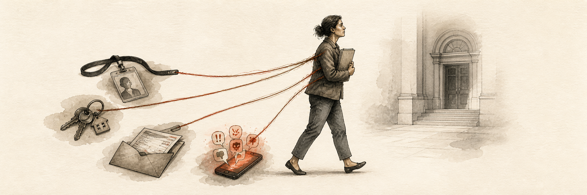

After reporting alleged public fraud, the poster said their employer fired them and their university retroactively changed passing grades before expelling them.1
Effort v. Impact
What happens when civic participation is risky, costly and scary?

Friction
Participation in civics can lead to serious personal harms.
“I was arrested on Saturday for peaceful protest.” A Minneapolis Reddit poster said police threw them down, sprayed them, held them for two days without necessary medication, and charged them with felony rioting.1
After reporting suspected child abuse to CPS and requesting union representation, the poster said the principal cut off future substitute work at the school.1
44%2
of U.S. adults are concerned about consequences for publicly disagreeing with their own side
What has been tried
- First Amendment rights against government retaliation
- Whistleblower, anti-retaliation laws, and confidential and anonymous reporting channels
- Legal aid from civil-liberties groups
Why has this problem not been solved
- Solutions get circumvented, i.e. police illegally arrest peaceful protesters.
- The constitution was supposed to protect us from this high risks of civic participation, its strength has been eroding over time.
-
Employers didn't used to know or care about your political oppinions, and what technology i.e. social media and cancel culture that has changed.